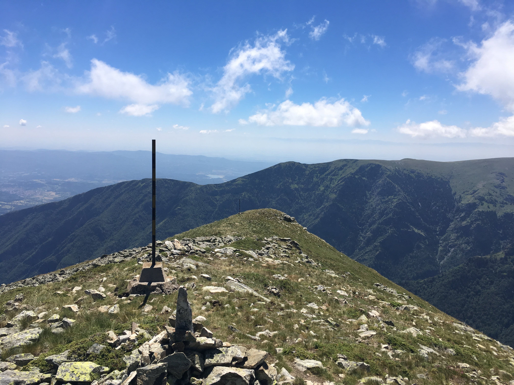
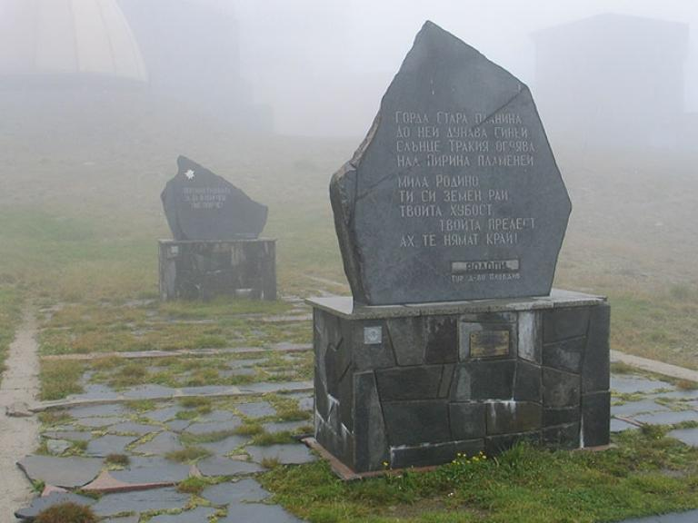

Bulgaria
Връх Ботев

Ботев е най-високият връх на Стара планина и на нейния дял Калоферска планина, висок е 2376 метра. Представлява обширно пасище с гранитна основа, страдащо от значителна ерозия. На връх Ботев са изградени метеорологична станция и радиорелейна и телевизионна станция (отворена на 10 юли 1966 г.), която покрива с телевизионен и радио сигнал над 65% от територията на България.

Връх Ботев се намира в Троянско-Калоферска планина, част от Средна Стара планина. Счита се, че в района на връх Ботев има навлечени стари гранитни структури от Средногорието – т. нар. Ботевски навлак. Основно масивът е съставен от гранитни скали, датиращи от олигоцена – комплекс на средно киселите вулканити – латити, андезити, шошонити